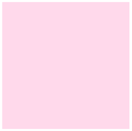
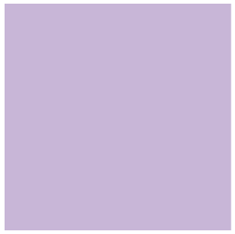
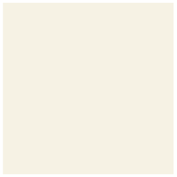

About

色ってセンスだけじゃない！
色彩検定は色について理論的・体系的に学ぶ検定。実は、センスや才能でしかどうにもならないものではなくて、知識を身につければ誰でも操れるようになるものなんです！
私にはできない、なんて思わずちょっと見てみて!!
部屋や街もコーディネート
インテリア、風景のコーディネートにも「色」の要素は必須。どの部分にどんな色のものを置いたらいいのかも勉強できちゃう。自分の部屋をおしゃれにできるのはもちろん、将来取りたい資格を見つけるのにも役立つかも！

Examples
3級の問題にチャレンジ
Q
次のA〜Bに示したJISの慣用名について、最も適切なものを①〜④の中から一つ選びなさい。
A. シアン
①

②
③
④
B. アイボリー
①
②
③
④
A. ③
①は山吹色、②は桜色、④はラベンダー。
B. ②
①は萌黄、③はワインレッド、④はシルバーグレイ。
Advantages
どんなときに役立つ？

授業や仕事でのプレゼン資料
毎日の服のコーディネート
チラシデザインなど
and more !!
Voices
受験者の声をご紹介
高校生のうちに知りたかった...。
進路選択の要素になるはず。
私は、高校生の頃から色彩検定自体に興味は持っていたものの、「大学受験が終わってからでいいや」と先延ばしにして受験はしていませんでした。大学生になって、サークルでデザインの活動などをする中で、そういえばと思い、初めて2級を受験しました。そこで初めて、色というものの奥深さに触れ、色彩能力はセンスだけじゃないということを学びました。今、大学ではデザインと全く関係ないことを学んでいますが、もし、高校生の頃にこれを受けていたら今とは違った姿になっていたかもしれません。3級であれば中学・高校の美術の授業で学んだことも出題されます。ぜひ一度気軽に受けてみてください！
How to Challenge
-
Step1
申し込みスケジュールをチェック
色彩検定は夏と冬の2回実施。それぞれに申し込み期間があるので、公式サイトで申し込みのスケジュールをチェックしよう。
-
Step2
申し込み期間が来たら申し込む
公式サイトのマイページで必要事項を記入。振り込みを忘れずに！
事前に願書を請求。願書と検定料を現金書留で色彩検定協会に送付しよう。
対応書店で検定料を支払い、願書に必要事項を記入して色彩検定協会へ。
-
Step3
受験票を持って指定の試験場へ
試験の2週間〜10日前には自宅に受験票が届くはず。その受験票と身分証明証を忘れずに、受験会場へ向かおう。受験までは、公式テキストや参考書を使って抜かりなく勉強しよう。自信を持って挑めるはず。